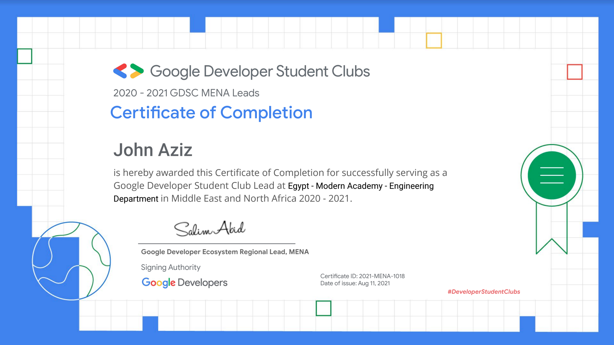
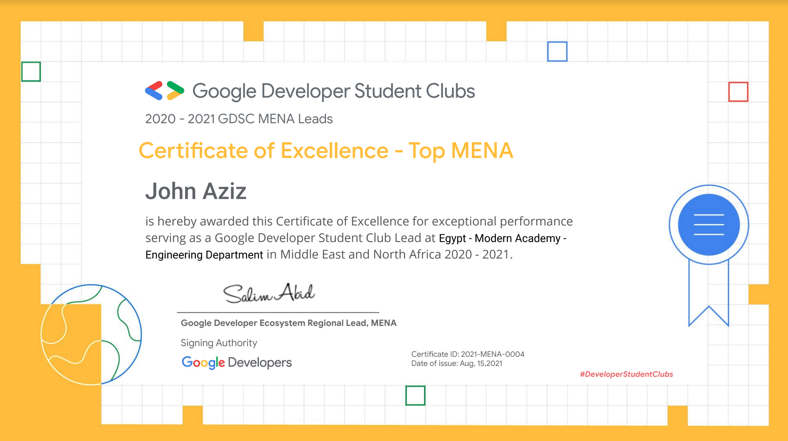
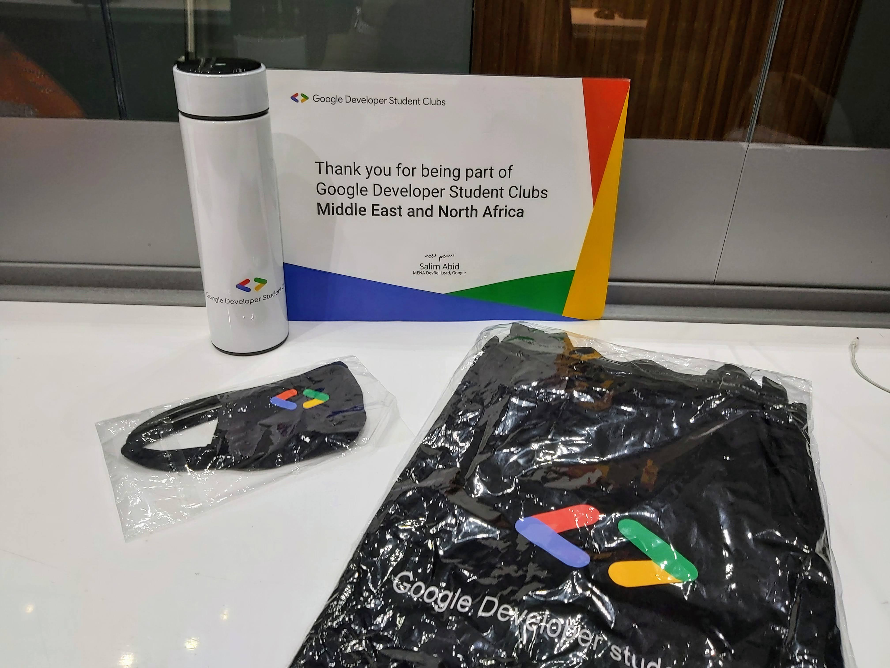

How did I know about the program?
One day I was going to my lecture and I met some people in our open area and they told me about a program that is provided by Google for students
and guess what?
I DID NOT BELIEVE THEM.
Later that day when I got back home I googled what they claimed and it was TRUE.
Applying for the program & Getting Rejected
I told my friend right away and we applied together really early as soon as the application was open. => goo.gle/gdsc-leads
We got the response together.. She got accepted and I got rejected.
This really made me sad.
I questioned myself days and nights, what did I do wrong? Is there is anything that I could've done better? and finally, I decided to contact our Project Manager Aya Sayed. She didn't reply lol but she saw my message. later on, she told that this message was one of the reasons I was accepted.

And to my surprise, the reason I got rejected was that I was too spontaneous I never knew there was such a thing but there is, and that it is very important to think before you speak.
Working with my Core Team
After being select as the GDSC Lead 2020-2021 I started forming my core team I searched for the following qualities Fun, Friendly, Passionate, Helpful.
And I found them my dearest core team members. we worked together in the first couple of months on learning about Google Technologies and Qwiklabs.
we spent a lot of nights together solving quests and labs. It was sooo fun.

Conclusion
It really was a life-changing experience for me learning about a lot of new things that I never heard of like all the Google Technologies lol and Communities.
I'm now a Co-Organizer at GDG Cloud Egypt which is one of the biggest developer communities in my country.
I have received the Global certificate from the Global Lead Erica Hanson.

I have received the MENA certificate from the Regional Lead Salim Abid.

And finally, I have received my Top MENA Certification of Excellence.

I won't forget to mention the person who has always been there for me who has helped me along the way to achieve all of this who has offered me her time and support Aya Sayed.
Thank you so much for your dedication.
You and Salim are what makes all of this possible.
